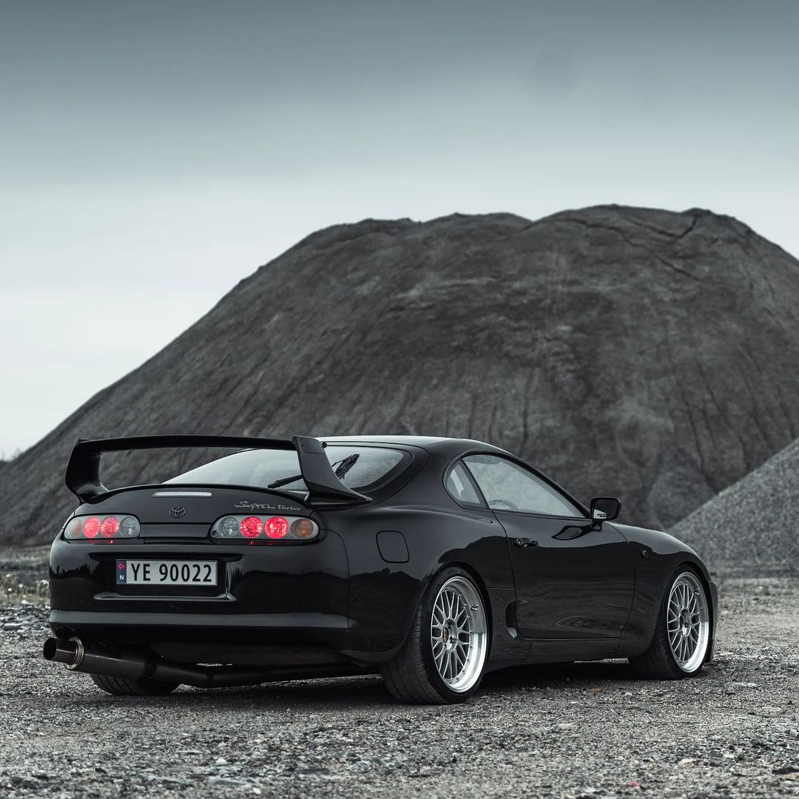

History
The Toyota Supra was first introduced in 1978 as a high-performance sports car. It was initially designed to compete with cars like the Porsche 911 and the Ferrari 308.
Power
The Toyota Supra was powered by a 3.0-liter inline-6 engine that produced 200 horsepower. This engine was capable of reaching speeds of up to 150 mph.
Manufacturing
The Toyota Supra was manufactured in Japan from 1978 to 1986. It was discontinued due to the high cost of production and the increasing popularity of the Toyota Celica.
Engine Life
more engineThe Toyota Supra's engine was designed to last for 100,000 miles. This made it a reliable and durable choice for car enthusiasts.